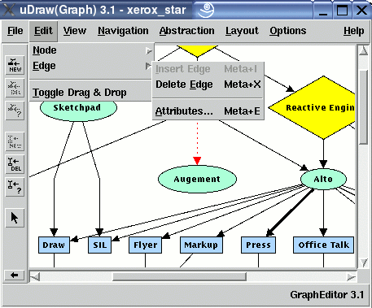

Manual
Edit/Edge Menu
The "Edit/Edge" menu contains operations to manipulate the edges of a graph, i.e. inserting edges, deleting edges and modifying node attributes.
Note: menu operations can also be invoked without the mouse by using keyboard commands.
-
Insert Edge
To insert a new edge between two nodes. This menu operation is available when exactly two nodes are selected in the graph (hint: use the SHIFT-key to select more than one node at a time). The node that was selected first will be the parent node and the node selected afterwards will be the child node of the new edge. The new edge will have the attributes which are currently set in the edge attributes dialog. The menu is also available when only one node is selected. In this case a self-edge is inserted for the selected node. -
Delete Edge
To delete the currently selected edge. This menu operation is available when exactly one edge is selected in the graph. -
Attributes...
To open the edge attributes dialog where the attributes of the currently selected edge can be modified. The attributes specify the visual appearance of an edge in the graph visualization. This menu operation is disabled when no edge is selected in the graph. You can also open this dialog with a double-click on an edge.
Copyright © 2005, Universität Bremen. All rights reserved.